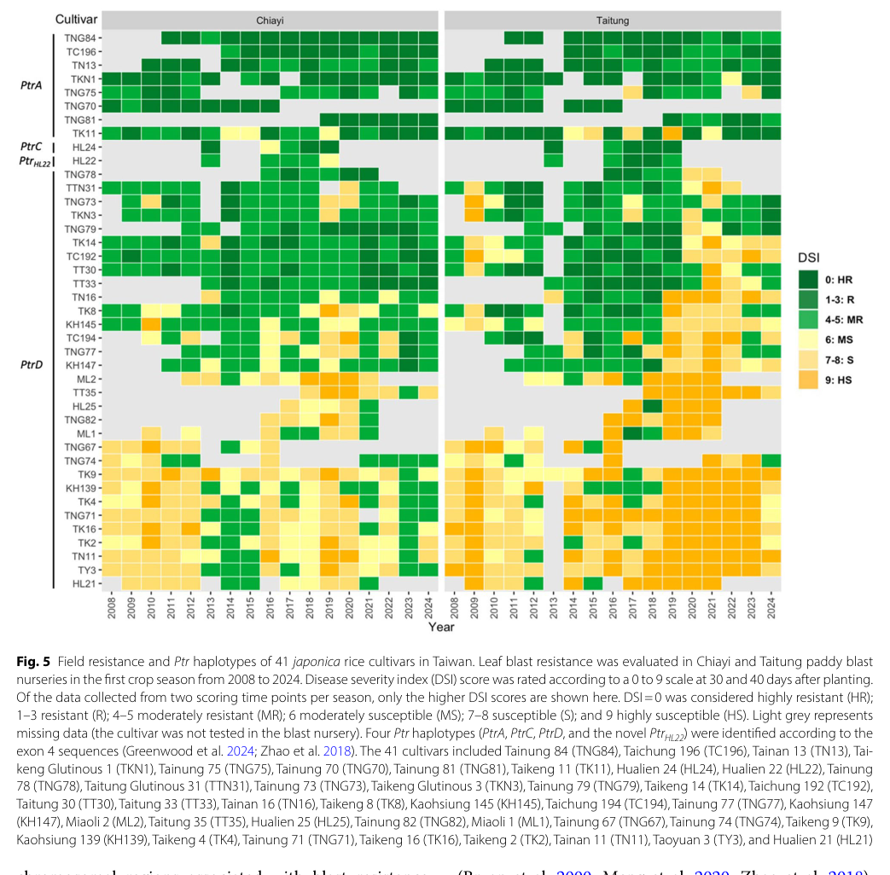

AVR-Pita is a secreted effector of the rice blast fungus Pyricularia (Magnaporthe) oryzae and the founding member of a small gene family (AVR-Pita1/2/3) that sits in unstable, often subtelomeric genomic locations. The 224-residue precursor has an N-terminal signal peptide followed by a fungal aspzincin (peptidase M35, deuterolysin-like) domain with an intact HExxH zinc-binding motif, so the protein is predicted to be a neutral zinc metalloprotease; no catalytic activity, substrate or product has ever been demonstrated for it, and the gene is dispensable for pathogenicity. During infection the protein is secreted through the Golgi-independent route into the biotrophic interfacial complex and delivered into the cytoplasm of invaded rice cells, where it localises to host mitochondria, binds the cytochrome c oxidase assembly protein OsCOX11 and raises COX activity; this lowers the reactive oxygen species burst triggered by the fungal pattern chitin and increases susceptibility, making AVR-Pita a suppressor of pattern-triggered immunity. In rice lines with the matching resistance specificity the same protein is detected and triggers an R-gene-dependent hypersensitive response and race-specific resistance; recognition was long attributed to the NLR Pi-ta but has since been shown to depend instead on the atypical armadillo-repeat membrane protein Ptr. Mutations in the predicted protease motif, frameshifts, transposon insertions and outright loss of the locus allow field isolates to escape this recognition, and the gene is correspondingly highly polymorphic and mobile in pathogen populations.
| GO Term | Evidence | Action | Reason |
|---|---|---|---|
|
GO:0004222
metalloendopeptidase activity
|
IEA
GO_REF:0000002 |
MARK AS OVER ANNOTATED |
Summary: InterPro2GO mapping from IPR029463 (lysine-specific metallo-endopeptidase domain). AVR-Pita does carry an intact aspzincin/M35 domain, and the original cloning paper inferred a neutral zinc metalloprotease from sequence similarity, but it also stated plainly that no catalytic activity had been shown, and none has been demonstrated since. The one study of what AVR-Pita does to a host protein found binding to, and functional modulation of, OsCOX11, not cleavage of it (PMID:33443630).
Reason: This is the more specific of two overlapping domain-derived molecular function rows, and it adds two unverified layers to an already unverified catalytic claim: that the (undemonstrated) peptidase is an endopeptidase, and, through the family name of IPR029463, that it is lysine-specific. For this protein no substrate, cleavage site or kinetic measurement exists; the domain-level inference is kept on the GO:0008237 row instead. The mapping is not biologically absurd, since characterised M35 deuterolysins are endopeptidases, which is why this is marked as over-annotation rather than removed.
Supporting Evidence:
PMID:11090206
Although protease activity by this protein has not been demonstrated biochemically, it is implicated.
PMID:11090206
The fungal metalloproteases showing the greatest sequence identity to AVR-Pita fall into families M35 and M36 in this superfamily of zinc-dependent metalloproteases.
file:PYROR/AVR-Pita/AVR-Pita-deep-research-falcon.md
Its classification as an M35 zinc metalloprotease is a *sequence/domain inference*, not a demonstrated catalytic reaction.
PMID:15319478
AVR-Pita from the rice ( Oryza sativa ) pathogen Magnaporthe grisea encodes a putative zinc-dependent metalloprotease that is dispensable for pathogenicity
|
|
GO:0005576
extracellular region
|
IEA
GO_REF:0000044 |
ACCEPT |
Summary: Mapping from the UniProt "Secreted" subcellular location. AVR-Pita has a predicted N-terminal signal peptide (residues 1-17 of F7J183) and behaves as a secreted protein in live-cell imaging during rice infection, accumulating in the biotrophic interfacial complex outside the fungal cell before delivery into the host cytoplasm.
Reason: The secreted stage is real and experimentally visualised: AVR-Pita is one of the effectors shown to traffic through the brefeldin-A-insensitive, BIC-associated secretion system, and it is routinely classed as a cytoplasmic (host-translocated) effector, which requires passage out of the fungal cell. The term is broad but correct; the host-side compartment where the protein acts is captured separately by the new GO:0033650 annotation.
Supporting Evidence:
PMID:23774898
we tested additional cytoplasmic effectors AVR-Pita (ref. 8) (Fig. 4c), Bas1 (ref. 25) (Fig. 4c) and Bas107
PMID:38722963
The cytoplasmic effectors include known AVR effectors, such as Pwl2, Avr-Pita, and AvrPiz-t
PMID:33443630
Avr-Pita is a putative neutral zinc metalloprotease with a signal peptide at its N-terminus
|
|
GO:0008237
metallopeptidase activity
|
IEA
GO_REF:0000002 |
KEEP AS NON CORE |
Summary: InterPro2GO mapping from the metallopeptidase catalytic domain superfamily (IPR024079). The F7J183 sequence does contain an intact aspzincin HExxH zinc-binding motif (HEMLH beginning at residue 177 of the 224-residue precursor, followed by the NEWEDYGY region), UniProt assigns a Zn(2+) cofactor and places the protein in the peptidase M35 family, and substituting the motif glutamate (E177D in the 223-residue numbering of the original papers) abolishes effector function.
Reason: The family-level inference is defensible: the fold and the catalytic motif are present and unmutated in this allele. But it has stayed an inference for 25 years - no protease assay, substrate or product has been reported - the gene is dispensable for pathogenicity, and the original authors explicitly left open that the motif mutations act on recognition rather than on catalysis. The function for which AVR-Pita has evidence is binding and modulating the host protein OsCOX11 at host mitochondria to suppress chitin-triggered ROS, so the predicted peptidase activity is kept as a plausible non-core family attribute rather than asserted as a core function.
Supporting Evidence:
PMID:11090206
AVR-Pita appears to encode a neutral zinc metalloprotease, given its amino acid sequence similarity to fungal metalloproteases
PMID:11090206
However, we do not rule out an alternative explanation for the effect of these missense mutations on AVR-Pita avirulence function
PMID:10921881
The avr-pita protein with the putative active site glutamic acid replaced with aspartic acid (E177D) failed to confer avirulence in whole-plant infection assays
file:PYROR/AVR-Pita/AVR-Pita-uniprot.txt
Belongs to the peptidase M35 family.
|
|
GO:0033650
host cell mitochondrion
|
IDA
PMID:33443630 The Fungal Effector Avr-Pita Suppresses Innate Immunity by I... |
NEW |
Summary: Han et al. (2021) expressed Avr-Pita:YFP in rice protoplasts and onion epidermal cells and found complete co-localisation with a mitochondrial marker protein and with MitoTracker, and co-localisation with OsCOX11:mCherry in mitochondria. The host mitochondrion is therefore the plant compartment in which the delivered effector is found and in which it engages its host target.
Reason: GOA records only the fungal-side secreted location (GO:0005576); the compartment in which the translocated effector acts is not annotated. This is a cellular component term supported by direct imaging in plant cells, so it raises none of the participation concerns that apply to new process terms. GO:0030430 host cell cytoplasm was considered and deliberately not proposed: AVR-Pita is classed as a cytoplasmic effector, but the direct localisation evidence in rice cells is mitochondrial and the host-cell compartment is already stated by this term.
Supporting Evidence:
PMID:33443630
Avr-Pita:YFP perfectly co-localized with the mitochondrial marker Rflb:mCherry (Wang et al., 2006) in rice protoplasts and with the mitochondrial dye MitoTracker in onion epidermal cells
PMID:33443630
These results indicate that the fungal effector Avr-Pita targets the host mitochondria and binds OsCOX11
|
|
GO:0052034
effector-mediated suppression of host pattern-triggered immunity
|
IDA
PMID:33443630 The Fungal Effector Avr-Pita Suppresses Innate Immunity by I... |
NEW |
Summary: Ectopic expression of Avr-Pita in rice suppressed PAMP-triggered defence responses and enhanced susceptibility to M. oryzae. Mechanistically the effector binds the COX assembly protein OsCOX11 (yeast two-hybrid with the mature Avr-Pita49-224, confirmed by pull-down), raises cytochrome c oxidase activity, and lowers the reactive oxygen species burst elicited by the fungal pattern chitin.
Reason: This is the only mechanistic virulence function established for AVR-Pita and it is absent from GOA, which holds only domain- and location-derived rows. The participation test is satisfied by the effector doing the work itself: AVR-Pita is the entity that binds OsCOX11 and the entity whose expression raises COX activity, and that raised COX activity is the step that damps the chitin-triggered ROS burst; the claim does not rest on a knockout phenotype showing mere necessity. GO:0052034 is the right level because the suppressed output measured is immunity triggered by a microbe-associated molecular pattern (chitin), not a salicylate-specific or effector-triggered branch. Comparator check: the symbiont-side effector terms are the established convention for curated fungal effectors in this repository rather than a term type that avoids substrates - for example AVR-Pia (genes/PYROR/AVR-Pia) carries the sibling term GO:0080185 - so this is a genuine gap in the IEA-only GOA record for AVR-Pita.
Supporting Evidence:
PMID:33443630
ectopically expressing Avr-Pita in rice enhances susceptibility to M. oryzae and suppresses pathogen-associated molecular pattern (PAMP)-triggered defense responses
PMID:33443630
ROS accumulation was significantly suppressed in PUbi::Avr-Pita and PUbi::OsCOX11 plants, whereas the ROS burst was strongly delayed in oscox11/OsCOX11 cells after chitin treatment
PMID:33443630
COX activity was much higher in PUbi::Avr-Pita and PUbi::OsCOX11 plants than in the WT both before and after chitin treatment
|
|
GO:0080185
effector-mediated activation of plant hypersensitive response by symbiont
|
IDA
PMID:10921881 Direct interaction of resistance gene and avirulence gene pr... |
NEW |
Summary: AVR-Pita is the ligand whose detection in rice carrying the matching resistance specificity triggers an R-gene-dependent hypersensitive response and race-specific resistance. Introducing the cloned gene into virulent isolates confers avirulence on those rice cultivars (PMID:11090206), and transient expression of AVR-Pita176 inside rice cells elicits the resistance response, which is lost in the same protease-motif mutants that lose avirulence in whole-plant infection (PMID:10921881).
Reason: Participation test: the effector itself performs the recognised step - it is the elicitor, and effector-side point mutations abolish the host response, so the claim is not simply that the gene is required for an outcome produced by host proteins. GO:0080185 is defined for exactly this symbiont-side role, including indirect recognition through R proteins, which matters here because the receptor assignment has changed: recognition was attributed to the NLR Pi-ta on the basis of direct AVR-Pita176-Pi-ta LRD binding, but RNAi and CRISPR genetics later showed it depends solely on the atypical protein Ptr (PMID:38834685). That reassignment changes which host protein detects the effector, not the fact that the effector triggers the hypersensitive response, so the symbiont-side term stands. Comparator check: AVR-Pia and the Fulvia fulva effector AVR9 reviewed in this repository carry the same term for the same role, and GOA has no process annotation at all for AVR-Pita.
Supporting Evidence:
PMID:11090206
When introduced into virulent rice pathogens, the cloned gene specifically confers avirulence toward rice cultivars that contain Pi-ta.
PMID:10921881
two separate mutations in the AVR-Pita protease motif that eliminate avirulence in fungal infection assays also eliminate elicitor activity in the transient expression assay
PMID:10921881
These data suggest that the AVR-Pita 176 protein binds directly to the Pi-ta LRD region inside the plant cell to initiate a Pi-ta -mediated defense response
PMID:38834685
we found that AVR-Pita recognition relies solely on Ptr and that the NLR Pi-ta has no role in it
|
Q: Is AVR-Pita a catalytically active metalloprotease at all, and if so what does it cleave in the rice cell? The HExxH motif is intact and motif mutations abolish effector function, but no cleavage has ever been measured, and the characterised host interaction with OsCOX11 was shown as binding.
Suggested experts: Barbara Valent
Q: Does AVR-Pita cleave OsCOX11, or does it act as a non-catalytic activator of COX assembly? Distinguishing these decides whether a molecular function term can be asserted at all and, if so, whether has_input OsCOX11 is appropriate.
Suggested experts: Letian Chen
Q: How should GO handle avirulence effectors whose recognising receptor has been reassigned, as here from the NLR Pi-ta to Ptr? The symbiont-side term GO:0080185 is unaffected, but host-side annotations made under the Pi-ta model may need re-curation onto Ptr.
Experiment: Express and refold the mature AVR-Pita aspzincin domain (residues about 49-224) and assay zinc-dependent peptidase activity against generic substrates (azocasein, FRETS peptide libraries) and against recombinant OsCOX11, comparing wild type with the HExxH glutamate mutant. This is the missing experiment behind every current molecular function annotation on this protein.
Experiment: Test whether catalysis is required for virulence as opposed to recognition: complement an AVR-Pita deletion isolate with wild-type and catalytic-glutamate mutant alleles and score chitin-triggered ROS suppression and COX activity in planta on rice lacking the recognising Ptr allele, so that the avirulence phenotype does not mask the virulence readout.
Experiment: Map the AVR-Pita import route to host mitochondria - whether delivery into the rice cytoplasm via the biotrophic interfacial complex is followed by canonical TOM/TIM import or by association with the outer membrane - using submitochondrial fractionation and protease-protection assays on infected tissue rather than on ectopically expressed protein.
The research report should be a detailed narrative explaining the function, biological processes, and localization of the gene product. Citations should be given for all claims.
You should prioritize authoritative reviews and primary scientific literature when conducting research. You can supplement
this with annotations you find in gene/protein databases, but these can be outdated or inaccurate.
We are specifically interested in the primary function of the gene - for enzymes, what reaction is catalyzed, and what is the substrate specificity? For transporters, what is the substrate? For structural proteins or adapters, what is the broader structural role? For signaling molecules, what is the role in the pathway.
We are interested in where in or outside the cell the gene product carries out its function.
We are also interested in the signaling or biochemical pathways in which the gene functions. We are less interested in broad pleiotropic effects, except where these elucidate the precise role.
Include evidence where possible. We are interested in both experimental evidence as well as inference from structure, evolution, or bioinformatic analysis. Precise studies should be prioritized over high-throughput, where available.
The supplied UniProt record identifies F7J183, derived from EMBL BAK40882.1, as AVR-Pita from Pyricularia oryzae, the rice-blast fungus also called Magnaporthe oryzae. The organism, effector name, and annotated fungal M35 metalloprotease domains agree with the subject of the AVR-Pita literature; this is not the similarly named AVR-Pia effector or the rice resistance protein Pi-ta. Original cloning established that a fungal AVR-Pita gene confers avirulence on rice carrying the corresponding resistance phenotype and encodes a predicted zinc-metalloprotease-like protein. Importantly, the papers reviewed do not explicitly match their experimental protein sequences to F7J183/BAK40882.1. Findings for a particular experimental allele should therefore not be assumed to apply to every residue or recognition phenotype of F7J183 without sequence comparison. UniProt record; Orbach et al., November 2000. (orbach2000atelomericavirulence pages 1-2, orbach2000atelomericavirulence pages 5-6, chuma2011multipletranslocationof pages 1-2)
The naming also requires care: AVR-Pita1 and AVR-Pita2 are related, often mobile homologs that can confer avirulence in tested fungal backgrounds, whereas AVR-Pita3 lacks that activity. Even among closely related copies, recognition can differ. A family-level name alone does not identify which experimentally characterized allele F7J183 represents. Chuma et al., July 2011. (chuma2011multipletranslocationof pages 10-12, chuma2011multipletranslocationof pages 1-2)
The best-supported functional description is secreted, host-targeting fungal effector involved in infection and allele-specific activation of rice immunity. Its classification as an M35 zinc metalloprotease is a sequence/domain inference, not a demonstrated catalytic reaction. In the original 223-residue AVR-Pita protein, similarity to fungal neutral metalloproteases and the conserved motif led to predictions that His176 and His180 bind zinc and Glu177 participates in catalysis. Changing Glu177 to glycine abolished the tested avirulence phenotype. This establishes the biological importance of that residue, not that loss of peptide-bond hydrolysis caused the phenotype: a substitution could also alter protein structure or recognition. Neither a purified-enzyme cleavage reaction, cleavage-site preference, physiological substrate, nor a catalytic requirement for mitochondrial targeting has been established by these studies. Accordingly, proteolytic substrate specificity is unknown; rice OsCOX11 is an experimentally supported binding partner, not a proven cleavage substrate. Residue numbers refer to the studied sequence, not a verified alignment to F7J183. Orbach et al., 2000; Han et al., January 2021. (orbach2000atelomericavirulence pages 5-6, orbach2000atelomericavirulence pages 7-9, han2021thefungaleffector pages 2-4, han2021thefungaleffector pages 4-6)
For a compact distinction between demonstrated functions and mechanistic inference, the evidence can be summarized as follows.
| Aspect | Direct result | Confidence / limitation | DOI link |
|---|---|---|---|
| Identity and M35 annotation | AVR-Pita from Pyricularia oryzae (= Magnaporthe oryzae) is a predicted 223-aa neutral zinc metalloprotease-like effector. Sequence similarity supports M35/M36 classification; His176 and His180 are predicted zinc ligands and Glu177 the catalytic residue. E177G abolished avirulence. (orbach2000atelomericavirulence pages 5-6, orbach2000atelomericavirulence pages 7-9) | Moderate for metalloprotease-like classification; low for enzymatic reaction. No purified-enzyme proteolysis, cleavage specificity, physiological substrate, or direct catalytic assay has been reported. The cited experiments were not explicitly accession-matched to F7J183/BAK40882.1. | Orbach et al., 2000 |
| Secretion and infection-interface localization | Fluorescent AVR-Pita accumulated in the biotrophic interfacial complex (BIC); its secretion/BIC localization persisted during brefeldin-A treatment, supporting a Golgi-independent route. In 2023, AVR-Pita was detected in BICs in 100% of observed UBA4+ infection cells, disappeared in Δuba4, and was restored by paromomycin, linking production to Uba4–Urm1-dependent tRNA-U34 thiolation. (li2023unconventionalsecretionof pages 3-4, giraldo2013twodistinctsecretion pages 4-6) | High for BIC accumulation and BFA resistance. The AVR-Pita-specific experiments establish secretion to the host–fungus interface more directly than final translocation across the plant membrane; broader host-cytoplasmic delivery is supported by cytoplasmic-effector studies. No experiment was explicitly accession-matched to F7J183. | Giraldo et al., 2013; Li et al., 2023 |
| Host localization and virulence target | Mature AVR-Pita bound rice OsCOX11 in yeast two-hybrid and in-vitro pull-down assays. AVR-Pita:YFP co-localized with mitochondrial markers and OsCOX11:mCherry. AVR-Pita or OsCOX11 overexpression increased cytochrome-c-oxidase activity, reduced chitin-triggered ROS/defense-gene responses, and increased blast susceptibility; reduced OsCOX11 dosage increased resistance. (han2021thefungaleffector pages 2-4, han2021thefungaleffector pages 4-6, han2021thefungaleffector pages 6-8) | Moderate–high for binding/localization; moderate for the physiological pathway. Major functional evidence relies on ectopic or constitutive expression, and no catalytic mutant or OsCOX11 cleavage product established that protease activity mediates the effect. | Han et al., 2021 |
| Immune recognition: revised 2024 model | CRISPR/RNAi and infection assays showed that Ptr—not the linked NLR Pi-ta—is required for AVR-Pita recognition. PtrA confers Pi-ta2 resistance and recognized all variants tested; PtrB confers classical Pi-ta resistance but recognized only Tyr191/192 variants. A Tyr→Cys substitution enabled escape from PtrB while retaining PtrA recognition. (xiao2024theunconventionalresistance pages 2-3, xiao2024theunconventionalresistance pages 3-5, xiao2024theunconventionalresistance pages 5-6, xiao2024theunconventionalresistance pages 6-7) | High for genetic receptor assignment and allele specificity. The historical Pi-ta–AVR-Pita interaction could not be reproduced. Yeast two-hybrid and co-IP detected no direct Ptr–AVR-Pita binding, and no Ptr cleavage was observed, so the molecular sensing mechanism remains unresolved. (xiao2024theunconventionalresistance pages 8-9, xiao2024theunconventionalresistance pages 6-7) | Xiao et al., 2024 |
| Field implementation and breeding relevance | The released Taiwanese cultivar Tainung 84 carries PtrA and has maintained strong blast resistance since 2010. PtrA occurred in 8 of 41 surveyed japonica cultivars (19.5%), which showed good field resistance during 2008–2024. Fine mapping delimited the Ptr locus to 140.4 kb. (wang2024ptrapiztand pages 1-2, wang2024ptrapiztand media 83198969) | High for field association; not proof that AVR-Pita recognition alone caused durability. Tainung 84 also carries Piz-t and the partial-resistance QTL qBR12_3.3–4.4; the authors therefore support multilocus pyramiding rather than relying solely on PtrA. | Wang et al., 2024 |
Table: Evidence-ranked functional annotation of AVR-Pita, separating experimentally demonstrated secretion, host targeting, and immune recognition from sequence-based protease inference. Accession-specific assignment to F7J183 remains unverified in the cited experiments.
AVR-Pita has an N-terminal secretion-associated region; experimental work often studies a C-terminal 176-residue, processed-region construct separately from the precursor. During invasion, fluorescent AVR-Pita accumulates at the biotrophic interfacial complex (BIC), the specialized interface between fungal invasive hyphae and the living rice cell. In contrast to conventionally secreted apoplastic effectors, its BIC accumulation continues under brefeldin A treatment, supporting a Golgi-bypass secretion route. This experiment directly establishes secretion/interface localization; it should not, by itself, be overstated as imaging every subsequent membrane-crossing step for AVR-Pita. Jia et al., August 2000; Giraldo et al., June 2013. (younas2024progressinthe pages 8-9, giraldo2013twodistinctsecretion pages 4-6, giraldo2013twodistinctsecretion pages 1-2)
A 2023 primary study added a regulatory mechanism for effector deployment. In infected cells, fluorescent AVR-Pita was present at BICs in all examined wild-type UBA4 samples but absent from the BICs of the uba4 deletion mutant; paromomycin restored the signal. The authors relate this phenotype to Uba4–Urm1-dependent thiolation of wobble uridine in tRNA and efficient translation of mRNAs enriched for AA-ending codons, rather than to a universal block of secretion. Their AVR-Pita codon-use analysis reported 88% AA-ending codons among the relevant synonymous codons, compared with 67% for PWL2. These results characterize production and deployment in the fungal infection cell, not AVR-Pita’s enzymatic substrate. Li et al., August 2023. (li2023unconventionalsecretionof pages 3-4, li2023unconventionalsecretionof pages 5-6)
Inside plant cells, the strongest experimentally identified host-associated location is the mitochondrion. AVR-Pita fluorescent fusions colocalized with mitochondrial markers in rice protoplasts and onion cells. Yeast two-hybrid and purified-protein pull-down assays showed interaction with rice OsCOX11, a cytochrome-c-oxidase assembly factor; OsCOX11 residues 140–220 were sufficient for interaction in the reported mapping assays. In transgenic rice, AVR-Pita expression increased cytochrome-c-oxidase activity and attenuated chitin-triggered reactive oxygen species (ROS) and defense-gene responses; OsCOX11 overexpression similarly increased susceptibility, whereas reduced OsCOX11 dosage increased resistance. The resulting model is AVR-Pita → OsCOX11-associated mitochondrial respiratory/ROS regulation → weaker basal immunity. Because much of the functional evidence comes from ectopic expression and no cleavage of OsCOX11 was shown, the precise biochemical step between binding and enhanced oxidase activity remains unresolved. Han et al., 2021. (han2021thefungaleffector pages 2-4, han2021thefungaleffector pages 4-6, han2021thefungaleffector pages 6-8)
The classical model held that intracellular AVR-Pita binds the leucine-rich region of the rice NLR Pi-ta, triggering effector-triggered resistance; historical transient-expression and interaction work supported that interpretation. Xiao and colleagues substantially revised the receptor assignment in 2024. In their tested rice backgrounds, targeted disruption of the nearby unconventional resistance gene Ptr, but not the NLR gene Pi-ta, abolished AVR-Pita-dependent resistance; complementation and infection assays assigned the classical Pi-ta phenotype to PtrB and the broader Pi-ta2 phenotype to PtrA. They could not reproduce the earlier Pi-ta–AVR-Pita interaction in their assays. Consequently, presenting NLR Pi-ta as the established receptor or signaling component for AVR-Pita would misrepresent the current genetic evidence. Ptr has an armadillo-repeat region and predicted transmembrane spans, but its downstream immune-signaling mechanism remains unresolved. Jia et al., 2000; Xiao et al., June 2024. (xiao2024theunconventionalresistance pages 1-2, xiao2024theunconventionalresistance pages 2-3, xiao2024theunconventionalresistance pages 7-8, xiao2024theunconventionalresistance pages 3-5, xiao2024theunconventionalresistance pages 6-7)
The specificity of this host response is experimentally informative: PtrA recognized all AVR-Pita variants tested in the 2024 study, whereas PtrB recognized a narrower set carrying tyrosine at effector position 191/192. A tyrosine-to-cysteine change at that position permitted escape from PtrB but not PtrA in the tested genetic backgrounds. “Recognition” here means a demonstrated Ptr-dependent genetic/infection phenotype, not proven physical binding: yeast two-hybrid and co-immunoprecipitation did not detect a direct Ptr–AVR-Pita interaction, and co-expression did not establish cleavage of Ptr. An intermediary host component or another recognition mechanism remains possible. Positions 191 and 192 reflect numbering differences between tested effector variants and must not be assigned to F7J183 without alignment. Xiao et al., 2024. (xiao2024theunconventionalresistance pages 8-9, xiao2024theunconventionalresistance pages 5-6, xiao2024theunconventionalresistance pages 6-7)
In the 2024 isolate survey, 44 fungal isolates were examined: AVR-Pita was amplified from 36, sequence was resolved for 32, and these yielded 11 protein variants; 12 isolates carried at least two polymorphic copies. All 36 amplification-positive isolates were noninfectious on the tested Pi-ta2 differential rice line. The denominator matters: 11 variants among 32 sequenced isolates is not an inventory of all natural AVR-Pita alleles, and an amplified gene does not establish the F7J183 sequence. Gene presence, copy number, and the relevant tyrosine/cysteine polymorphism are therefore useful research-stage indicators for evaluating resistance spectra. Older chromosomal studies found active AVR-Pita homologs on chromosomes 1, 3, 4, 5, 6 and 7, as well as supernumerary chromosomes, consistent with repeated movement and potential loss of avirulence recognition. Xiao et al., 2024; Chuma et al., 2011. (xiao2024theunconventionalresistance pages 3-5, chuma2011multipletranslocationof pages 1-2)
Independent 2023 regional surveillance illustrates why results should not be generalized between populations: PCR testing of 397 isolates collected in China found AVR-Pita1 in 186/215 (86.51%) Heilongjiang isolates but 90/182 (49.45%) Hainan isolates; AVR-Pita3 was not detected in the Hainan sample. These are detection frequencies for family-member assays, not measurements of F7J183 protein abundance, catalytic activity, or Ptr recognition. Liu and colleagues, 2023. (吴伟怀2023黑龙江省和海南省稻瘟病菌中avrpita家族的分布及变异分析 pages 3-6, 吴伟怀2023黑龙江省和海南省稻瘟病菌中avrpita家族的分布及变异分析 pages 1-3)
A real-world breeding example is the released Taiwanese cultivar Tainung 84, which carries PtrA and has retained strong blast resistance since its 2010 release. A December 2024 field/genetic study found PtrA in 8 of 41 surveyed local japonica cultivars (19.5%), associated with good field resistance in evaluations spanning 2008–2024. Crucially, Tainung 84 also carries Piz-t and a partial-resistance locus, qBR12_3.3–4.4: its durable performance cannot be attributed exclusively to AVR-Pita recognition or used as proof that PtrA alone will remain durable everywhere. The authors identify marker-assisted combination of resistance loci as a prospective breeding application, not a demonstrated AVR-Pita-specific commercial diagnostic. The study’s Figure 5 displays the cultivar haplotypes alongside their field-resistance records. Wang et al., December 2024. (wang2024ptrapiztand pages 1-2, wang2024ptrapiztand pages 11-13, wang2024ptrapiztand media 83198969)
Annotation conclusion. For F7J183, the defensible annotation is AVR-Pita-family, M35 metalloprotease-like fungal effector; secreted to the infection interface and associated with host-cell mitochondrial OsCOX11/ROS regulation; capable of triggering allele-dependent Ptr-mediated rice resistance when the effector allele is recognized. Whether this exact accession is an active AVR-Pita1-like allele, what reaction it catalyzes—if any—and which peptide substrate it cleaves remain unverified. This distinction between measured effector biology and inferred protease chemistry is essential for functional annotation. (orbach2000atelomericavirulence pages 5-6, han2021thefungaleffector pages 2-4, giraldo2013twodistinctsecretion pages 4-6, xiao2024theunconventionalresistance pages 8-9, chuma2011multipletranslocationof pages 1-2)
References
(orbach2000atelomericavirulence pages 1-2): Marc J. Orbach, Leonard Farrall, James A. Sweigard, Forrest G. Chumley, and Barbara Valent. A telomeric avirulence gene determines efficacy for the rice blast resistance gene pi-ta. Plant Cell, 12:2019-2032, Nov 2000. URL: https://doi.org/10.1105/tpc.12.11.2019, doi:10.1105/tpc.12.11.2019. This article has 786 citations and is from a highest quality peer-reviewed journal.
(orbach2000atelomericavirulence pages 5-6): Marc J. Orbach, Leonard Farrall, James A. Sweigard, Forrest G. Chumley, and Barbara Valent. A telomeric avirulence gene determines efficacy for the rice blast resistance gene pi-ta. Plant Cell, 12:2019-2032, Nov 2000. URL: https://doi.org/10.1105/tpc.12.11.2019, doi:10.1105/tpc.12.11.2019. This article has 786 citations and is from a highest quality peer-reviewed journal.
(chuma2011multipletranslocationof pages 1-2): Izumi Chuma, Chihiro Isobe, Yuma Hotta, Kana Ibaragi, Natsuru Futamata, Motoaki Kusaba, Kentaro Yoshida, Ryohei Terauchi, Yoshikatsu Fujita, Hitoshi Nakayashiki, Barbara Valent, and Yukio Tosa. Multiple translocation of the avr-pita effector gene among chromosomes of the rice blast fungus magnaporthe oryzae and related species. PLoS Pathogens, 7:e1002147, Jul 2011. URL: https://doi.org/10.1371/journal.ppat.1002147, doi:10.1371/journal.ppat.1002147. This article has 326 citations and is from a highest quality peer-reviewed journal.
(chuma2011multipletranslocationof pages 10-12): Izumi Chuma, Chihiro Isobe, Yuma Hotta, Kana Ibaragi, Natsuru Futamata, Motoaki Kusaba, Kentaro Yoshida, Ryohei Terauchi, Yoshikatsu Fujita, Hitoshi Nakayashiki, Barbara Valent, and Yukio Tosa. Multiple translocation of the avr-pita effector gene among chromosomes of the rice blast fungus magnaporthe oryzae and related species. PLoS Pathogens, 7:e1002147, Jul 2011. URL: https://doi.org/10.1371/journal.ppat.1002147, doi:10.1371/journal.ppat.1002147. This article has 326 citations and is from a highest quality peer-reviewed journal.
(orbach2000atelomericavirulence pages 7-9): Marc J. Orbach, Leonard Farrall, James A. Sweigard, Forrest G. Chumley, and Barbara Valent. A telomeric avirulence gene determines efficacy for the rice blast resistance gene pi-ta. Plant Cell, 12:2019-2032, Nov 2000. URL: https://doi.org/10.1105/tpc.12.11.2019, doi:10.1105/tpc.12.11.2019. This article has 786 citations and is from a highest quality peer-reviewed journal.
(han2021thefungaleffector pages 2-4): Jingluan Han, Xiaoyu Wang, Fengping Wang, Zhe Zhao, Gousi Li, Xiaoyuan Zhu, Jing Su, and Letian Chen. The fungal effector avr-pita suppresses innate immunity by increasing cox activity in rice mitochondria. Rice, Jan 2021. URL: https://doi.org/10.1186/s12284-021-00453-4, doi:10.1186/s12284-021-00453-4. This article has 86 citations and is from a peer-reviewed journal.
(han2021thefungaleffector pages 4-6): Jingluan Han, Xiaoyu Wang, Fengping Wang, Zhe Zhao, Gousi Li, Xiaoyuan Zhu, Jing Su, and Letian Chen. The fungal effector avr-pita suppresses innate immunity by increasing cox activity in rice mitochondria. Rice, Jan 2021. URL: https://doi.org/10.1186/s12284-021-00453-4, doi:10.1186/s12284-021-00453-4. This article has 86 citations and is from a peer-reviewed journal.
(li2023unconventionalsecretionof pages 3-4): Gang Li, Nawaraj Dulal, Ziwen Gong, and Richard A. Wilson. Unconventional secretion of magnaporthe oryzae effectors in rice cells is regulated by trna modification and codon usage control. Nature Microbiology, 8:1706-1716, Aug 2023. URL: https://doi.org/10.1038/s41564-023-01443-6, doi:10.1038/s41564-023-01443-6. This article has 36 citations and is from a highest quality peer-reviewed journal.
(giraldo2013twodistinctsecretion pages 4-6): Martha C. Giraldo, Yasin F. Dagdas, Yogesh K. Gupta, Thomas A. Mentlak, Mihwa Yi, Ana Lilia Martinez-Rocha, Hiromasa Saitoh, Ryohei Terauchi, Nicholas J. Talbot, and Barbara Valent. Two distinct secretion systems facilitate tissue invasion by the rice blast fungus magnaporthe oryzae. Nature Communications, Jun 2013. URL: https://doi.org/10.1038/ncomms2996, doi:10.1038/ncomms2996. This article has 412 citations and is from a highest quality peer-reviewed journal.
(han2021thefungaleffector pages 6-8): Jingluan Han, Xiaoyu Wang, Fengping Wang, Zhe Zhao, Gousi Li, Xiaoyuan Zhu, Jing Su, and Letian Chen. The fungal effector avr-pita suppresses innate immunity by increasing cox activity in rice mitochondria. Rice, Jan 2021. URL: https://doi.org/10.1186/s12284-021-00453-4, doi:10.1186/s12284-021-00453-4. This article has 86 citations and is from a peer-reviewed journal.
(xiao2024theunconventionalresistance pages 2-3): Gui Xiao, Nutthalak Laksanavilat, Stella Cesari, Karine Lambou, Maël Baudin, Ahmad Jalilian, Mary Jeanie Telebanco-Yanoria, Veronique Chalvon, Isabelle Meusnier, Elisabeth Fournier, Didier Tharreau, Bo Zhou, Jun Wu, and Thomas Kroj. The unconventional resistance protein ptr recognizes the magnaporthe oryzae effector avr-pita in an allele-specific manner. Nature plants, 10:994-1004, Jun 2024. URL: https://doi.org/10.1038/s41477-024-01694-z, doi:10.1038/s41477-024-01694-z. This article has 38 citations and is from a highest quality peer-reviewed journal.
(xiao2024theunconventionalresistance pages 3-5): Gui Xiao, Nutthalak Laksanavilat, Stella Cesari, Karine Lambou, Maël Baudin, Ahmad Jalilian, Mary Jeanie Telebanco-Yanoria, Veronique Chalvon, Isabelle Meusnier, Elisabeth Fournier, Didier Tharreau, Bo Zhou, Jun Wu, and Thomas Kroj. The unconventional resistance protein ptr recognizes the magnaporthe oryzae effector avr-pita in an allele-specific manner. Nature plants, 10:994-1004, Jun 2024. URL: https://doi.org/10.1038/s41477-024-01694-z, doi:10.1038/s41477-024-01694-z. This article has 38 citations and is from a highest quality peer-reviewed journal.
(xiao2024theunconventionalresistance pages 5-6): Gui Xiao, Nutthalak Laksanavilat, Stella Cesari, Karine Lambou, Maël Baudin, Ahmad Jalilian, Mary Jeanie Telebanco-Yanoria, Veronique Chalvon, Isabelle Meusnier, Elisabeth Fournier, Didier Tharreau, Bo Zhou, Jun Wu, and Thomas Kroj. The unconventional resistance protein ptr recognizes the magnaporthe oryzae effector avr-pita in an allele-specific manner. Nature plants, 10:994-1004, Jun 2024. URL: https://doi.org/10.1038/s41477-024-01694-z, doi:10.1038/s41477-024-01694-z. This article has 38 citations and is from a highest quality peer-reviewed journal.
(xiao2024theunconventionalresistance pages 6-7): Gui Xiao, Nutthalak Laksanavilat, Stella Cesari, Karine Lambou, Maël Baudin, Ahmad Jalilian, Mary Jeanie Telebanco-Yanoria, Veronique Chalvon, Isabelle Meusnier, Elisabeth Fournier, Didier Tharreau, Bo Zhou, Jun Wu, and Thomas Kroj. The unconventional resistance protein ptr recognizes the magnaporthe oryzae effector avr-pita in an allele-specific manner. Nature plants, 10:994-1004, Jun 2024. URL: https://doi.org/10.1038/s41477-024-01694-z, doi:10.1038/s41477-024-01694-z. This article has 38 citations and is from a highest quality peer-reviewed journal.
(xiao2024theunconventionalresistance pages 8-9): Gui Xiao, Nutthalak Laksanavilat, Stella Cesari, Karine Lambou, Maël Baudin, Ahmad Jalilian, Mary Jeanie Telebanco-Yanoria, Veronique Chalvon, Isabelle Meusnier, Elisabeth Fournier, Didier Tharreau, Bo Zhou, Jun Wu, and Thomas Kroj. The unconventional resistance protein ptr recognizes the magnaporthe oryzae effector avr-pita in an allele-specific manner. Nature plants, 10:994-1004, Jun 2024. URL: https://doi.org/10.1038/s41477-024-01694-z, doi:10.1038/s41477-024-01694-z. This article has 38 citations and is from a highest quality peer-reviewed journal.
(wang2024ptrapiztand pages 1-2): Sheng-Shan Wang, Wei-Bin Chang, Ming-Chien Hsieh, Szu-Yu Chen, Dah-Jing Liao, Ching-Ying Liao, Wei-Chiang Shen, Hong-Hua Chen, Chieh-Yi Chen, Yi-Chia Chen, Yueh-Lin Lin, Chih-Wei Tung, Ruey-Shyang Chen, and Chia-Lin Chung. Ptra, piz-t, and a novel minor-effect qtl (qbr12_3.3–4.4) collectively contribute to the durable blast-resistance of rice cultivar tainung 84. Botanical Studies, Dec 2024. URL: https://doi.org/10.1186/s40529-024-00444-w, doi:10.1186/s40529-024-00444-w. This article has 0 citations and is from a peer-reviewed journal.
(wang2024ptrapiztand media 83198969): Sheng-Shan Wang, Wei-Bin Chang, Ming-Chien Hsieh, Szu-Yu Chen, Dah-Jing Liao, Ching-Ying Liao, Wei-Chiang Shen, Hong-Hua Chen, Chieh-Yi Chen, Yi-Chia Chen, Yueh-Lin Lin, Chih-Wei Tung, Ruey-Shyang Chen, and Chia-Lin Chung. Ptra, piz-t, and a novel minor-effect qtl (qbr12_3.3–4.4) collectively contribute to the durable blast-resistance of rice cultivar tainung 84. Botanical Studies, Dec 2024. URL: https://doi.org/10.1186/s40529-024-00444-w, doi:10.1186/s40529-024-00444-w. This article has 0 citations and is from a peer-reviewed journal.
(younas2024progressinthe pages 8-9): Muhammad Usama Younas, Irshad Ahmad, Muhammad Qasim, Zainab Ijaz, Nimra Rajput, Saima Parveen Memon, Waqar UL Zaman, Xiaohong Jiang, Yi Zhang, and Shimin Zuo. Progress in the management of rice blast disease: the role of avirulence and resistance genes through gene-for-gene interactions. Agronomy, 14:163, Jan 2024. URL: https://doi.org/10.3390/agronomy14010163, doi:10.3390/agronomy14010163. This article has 52 citations and is from a peer-reviewed journal.
(giraldo2013twodistinctsecretion pages 1-2): Martha C. Giraldo, Yasin F. Dagdas, Yogesh K. Gupta, Thomas A. Mentlak, Mihwa Yi, Ana Lilia Martinez-Rocha, Hiromasa Saitoh, Ryohei Terauchi, Nicholas J. Talbot, and Barbara Valent. Two distinct secretion systems facilitate tissue invasion by the rice blast fungus magnaporthe oryzae. Nature Communications, Jun 2013. URL: https://doi.org/10.1038/ncomms2996, doi:10.1038/ncomms2996. This article has 412 citations and is from a highest quality peer-reviewed journal.
(li2023unconventionalsecretionof pages 5-6): Gang Li, Nawaraj Dulal, Ziwen Gong, and Richard A. Wilson. Unconventional secretion of magnaporthe oryzae effectors in rice cells is regulated by trna modification and codon usage control. Nature Microbiology, 8:1706-1716, Aug 2023. URL: https://doi.org/10.1038/s41564-023-01443-6, doi:10.1038/s41564-023-01443-6. This article has 36 citations and is from a highest quality peer-reviewed journal.
(xiao2024theunconventionalresistance pages 1-2): Gui Xiao, Nutthalak Laksanavilat, Stella Cesari, Karine Lambou, Maël Baudin, Ahmad Jalilian, Mary Jeanie Telebanco-Yanoria, Veronique Chalvon, Isabelle Meusnier, Elisabeth Fournier, Didier Tharreau, Bo Zhou, Jun Wu, and Thomas Kroj. The unconventional resistance protein ptr recognizes the magnaporthe oryzae effector avr-pita in an allele-specific manner. Nature plants, 10:994-1004, Jun 2024. URL: https://doi.org/10.1038/s41477-024-01694-z, doi:10.1038/s41477-024-01694-z. This article has 38 citations and is from a highest quality peer-reviewed journal.
(xiao2024theunconventionalresistance pages 7-8): Gui Xiao, Nutthalak Laksanavilat, Stella Cesari, Karine Lambou, Maël Baudin, Ahmad Jalilian, Mary Jeanie Telebanco-Yanoria, Veronique Chalvon, Isabelle Meusnier, Elisabeth Fournier, Didier Tharreau, Bo Zhou, Jun Wu, and Thomas Kroj. The unconventional resistance protein ptr recognizes the magnaporthe oryzae effector avr-pita in an allele-specific manner. Nature plants, 10:994-1004, Jun 2024. URL: https://doi.org/10.1038/s41477-024-01694-z, doi:10.1038/s41477-024-01694-z. This article has 38 citations and is from a highest quality peer-reviewed journal.
(吴伟怀2023黑龙江省和海南省稻瘟病菌中avrpita家族的分布及变异分析 pages 3-6): 刘瑞， 赵羽涵， 顾欣怡， 王艳霞， 靳学慧， 吴伟怀. 黑龙江省和海南省稻瘟病菌中 avr-pita 家族的分布及变异分析. Unknown journal, 2023. URL: https://doi.org/10.3864/j.issn.0578-1752.2023.03.006, doi:10.3864/j.issn.0578-1752.2023.03.006.
(吴伟怀2023黑龙江省和海南省稻瘟病菌中avrpita家族的分布及变异分析 pages 1-3): 刘瑞， 赵羽涵， 顾欣怡， 王艳霞， 靳学慧， 吴伟怀. 黑龙江省和海南省稻瘟病菌中 avr-pita 家族的分布及变异分析. Unknown journal, 2023. URL: https://doi.org/10.3864/j.issn.0578-1752.2023.03.006, doi:10.3864/j.issn.0578-1752.2023.03.006.
(wang2024ptrapiztand pages 11-13): Sheng-Shan Wang, Wei-Bin Chang, Ming-Chien Hsieh, Szu-Yu Chen, Dah-Jing Liao, Ching-Ying Liao, Wei-Chiang Shen, Hong-Hua Chen, Chieh-Yi Chen, Yi-Chia Chen, Yueh-Lin Lin, Chih-Wei Tung, Ruey-Shyang Chen, and Chia-Lin Chung. Ptra, piz-t, and a novel minor-effect qtl (qbr12_3.3–4.4) collectively contribute to the durable blast-resistance of rice cultivar tainung 84. Botanical Studies, Dec 2024. URL: https://doi.org/10.1186/s40529-024-00444-w, doi:10.1186/s40529-024-00444-w. This article has 0 citations and is from a peer-reviewed journal.

Research journal for the GO annotation review. No -deep-research-falcon.md file was
present in this folder at the time of writing (a background retry was reported as
running but had not produced a file), so this review was built from UniProt
(AVR-Pita-uniprot.txt), the cached publications in publications/, and PubMed
metadata lookups. No deep-research file is cited as a reference.
...DTAIL HEMLH IILNEWEDYGY..., i.e. H-E-M-L-HNEWEDYGYEWDEI. The motif is therefore intact in this allele.Han et al. 2021 PMID:33443630 is the key paper:
So the molecular activity that AVR-Pita has actually been shown to perform on a host
substrate is binding/modulating OsCOX11 at host mitochondria, with the measurable
output being suppression of chitin (PAMP)-triggered ROS. Nothing in that paper tests
proteolysis of OsCOX11, so no catalytic claim follows from it.
genes/ORYSJ/Pi-ta review in this repository recordsKEEP_AS_NON_CORE. The zincin fold and the intact HExxH motif make theMARK_AS_OVER_ANNOTATED. This mapping adds an endopeptidase (and, via theACCEPT. SignalGO:0033650 host cell mitochondrion and the twoGO:0052034 effector-mediated
suppression of host pattern-triggered immunity (it binds OsCOX11 and raises COXGO:0080185
effector-mediated activation of plant hypersensitive response by symbiont (it isgenes/PYROR/AVR-Pia usesgenes/FULFL/AVR9 the same;GO:0030430 host cell cytoplasm was considered and left out: AVR-Pita is describedThe falcon retry finished after the review above was written
(AVR-Pita-deep-research-falcon.md). It agrees with every decision here: protease
activity is a sequence/domain inference only ("Its classification as an M35 zinc
metalloprotease is a sequence/domain inference, not a demonstrated catalytic
reaction"), the host target is OsCOX11 at mitochondria, and recognition goes through
Ptr rather than the Pi-ta NLR (Xiao 2024). No action changed; the file is now cited
on the metalloendopeptidase row and in references.
id: F7J183
gene_symbol: AVR-Pita
product_type: PROTEIN
status: COMPLETE
taxon:
id: NCBITaxon:318829
label: Pyricularia oryzae
description: >-
AVR-Pita is a secreted effector of the rice blast fungus Pyricularia (Magnaporthe)
oryzae and the founding member of a small gene family (AVR-Pita1/2/3) that sits in
unstable, often subtelomeric genomic locations. The 224-residue precursor has an
N-terminal signal peptide followed by a fungal aspzincin (peptidase M35,
deuterolysin-like) domain with an intact HExxH zinc-binding motif, so the protein is
predicted to be a neutral zinc metalloprotease; no catalytic activity, substrate or
product has ever been demonstrated for it, and the gene is dispensable for
pathogenicity. During infection the protein is secreted through the
Golgi-independent route into the biotrophic interfacial complex and delivered into
the cytoplasm of invaded rice cells, where it localises to host mitochondria, binds
the cytochrome c oxidase assembly protein OsCOX11 and raises COX activity; this
lowers the reactive oxygen species burst triggered by the fungal pattern chitin and
increases susceptibility, making AVR-Pita a suppressor of pattern-triggered
immunity. In rice lines with the matching resistance specificity the same protein is
detected and triggers an R-gene-dependent hypersensitive response and race-specific
resistance; recognition was long attributed to the NLR Pi-ta but has since been
shown to depend instead on the atypical armadillo-repeat membrane protein Ptr.
Mutations in the predicted protease motif, frameshifts, transposon insertions and
outright loss of the locus allow field isolates to escape this recognition, and the
gene is correspondingly highly polymorphic and mobile in pathogen populations.
existing_annotations:
- term:
id: GO:0004222
label: metalloendopeptidase activity
evidence_type: IEA
original_reference_id: GO_REF:0000002
qualifier: enables
supporting_entities:
- InterPro:IPR029463
review:
summary: >-
InterPro2GO mapping from IPR029463 (lysine-specific metallo-endopeptidase domain).
AVR-Pita does carry an intact aspzincin/M35 domain, and the original cloning paper
inferred a neutral zinc metalloprotease from sequence similarity, but it also
stated plainly that no catalytic activity had been shown, and none has been
demonstrated since. The one study of what AVR-Pita does to a host protein found
binding to, and functional modulation of, OsCOX11, not cleavage of it
(PMID:33443630).
action: MARK_AS_OVER_ANNOTATED
reason: >-
This is the more specific of two overlapping domain-derived molecular function
rows, and it adds two unverified layers to an already unverified catalytic claim:
that the (undemonstrated) peptidase is an endopeptidase, and, through the family
name of IPR029463, that it is lysine-specific. For this protein no substrate,
cleavage site or kinetic measurement exists; the domain-level inference is kept
on the GO:0008237 row instead. The mapping is not biologically absurd, since
characterised M35 deuterolysins are endopeptidases, which is why this is marked
as over-annotation rather than removed.
supported_by:
- reference_id: PMID:11090206
supporting_text: Although protease activity by this protein has not been demonstrated
biochemically, it is implicated.
- reference_id: PMID:11090206
supporting_text: The fungal metalloproteases showing the greatest sequence identity
to AVR-Pita fall into families M35 and M36 in this superfamily of zinc-dependent
metalloproteases.
- reference_id: file:PYROR/AVR-Pita/AVR-Pita-deep-research-falcon.md
supporting_text: Its classification as an M35 zinc metalloprotease is a *sequence/domain
inference*, not a demonstrated catalytic reaction.
- reference_id: PMID:15319478
supporting_text: AVR-Pita from the rice ( Oryza sativa ) pathogen Magnaporthe grisea
encodes a putative zinc-dependent metalloprotease that is dispensable for pathogenicity
- term:
id: GO:0005576
label: extracellular region
evidence_type: IEA
original_reference_id: GO_REF:0000044
qualifier: located_in
supporting_entities:
- UniProtKB-SubCell:SL-0243
review:
summary: >-
Mapping from the UniProt "Secreted" subcellular location. AVR-Pita has a
predicted N-terminal signal peptide (residues 1-17 of F7J183) and behaves as a
secreted protein in live-cell imaging during rice infection, accumulating in the
biotrophic interfacial complex outside the fungal cell before delivery into the
host cytoplasm.
action: ACCEPT
reason: >-
The secreted stage is real and experimentally visualised: AVR-Pita is one of the
effectors shown to traffic through the brefeldin-A-insensitive, BIC-associated
secretion system, and it is routinely classed as a cytoplasmic (host-translocated)
effector, which requires passage out of the fungal cell. The term is broad but
correct; the host-side compartment where the protein acts is captured separately
by the new GO:0033650 annotation.
supported_by:
- reference_id: PMID:23774898
supporting_text: we tested additional cytoplasmic effectors AVR-Pita (ref. 8) (Fig.
4c), Bas1 (ref. 25) (Fig. 4c) and Bas107
- reference_id: PMID:38722963
supporting_text: The cytoplasmic effectors include known AVR effectors, such as Pwl2,
Avr-Pita, and AvrPiz-t
- reference_id: PMID:33443630
supporting_text: Avr-Pita is a putative neutral zinc metalloprotease with a signal
peptide at its N-terminus
- term:
id: GO:0008237
label: metallopeptidase activity
evidence_type: IEA
original_reference_id: GO_REF:0000002
qualifier: enables
supporting_entities:
- InterPro:IPR024079
review:
summary: >-
InterPro2GO mapping from the metallopeptidase catalytic domain superfamily
(IPR024079). The F7J183 sequence does contain an intact aspzincin HExxH
zinc-binding motif (HEMLH beginning at residue 177 of the 224-residue precursor,
followed by the NEWEDYGY region), UniProt assigns a Zn(2+) cofactor and places the
protein in the peptidase M35 family, and substituting the motif glutamate (E177D
in the 223-residue numbering of the original papers) abolishes effector function.
action: KEEP_AS_NON_CORE
reason: >-
The family-level inference is defensible: the fold and the catalytic motif are
present and unmutated in this allele. But it has stayed an inference for 25 years
- no protease assay, substrate or product has been reported - the gene is
dispensable for pathogenicity, and the original authors explicitly left open that
the motif mutations act on recognition rather than on catalysis. The function for
which AVR-Pita has evidence is binding and modulating the host protein OsCOX11 at
host mitochondria to suppress chitin-triggered ROS, so the predicted peptidase
activity is kept as a plausible non-core family attribute rather than asserted as
a core function.
supported_by:
- reference_id: PMID:11090206
supporting_text: AVR-Pita appears to encode a neutral zinc metalloprotease, given
its amino acid sequence similarity to fungal metalloproteases
- reference_id: PMID:11090206
supporting_text: However, we do not rule out an alternative explanation for the effect
of these missense mutations on AVR-Pita avirulence function
- reference_id: PMID:10921881
supporting_text: The avr-pita protein with the putative active site glutamic acid
replaced with aspartic acid (E177D) failed to confer avirulence in whole-plant
infection assays
- reference_id: file:PYROR/AVR-Pita/AVR-Pita-uniprot.txt
supporting_text: Belongs to the peptidase M35 family.
- term:
id: GO:0033650
label: host cell mitochondrion
evidence_type: IDA
original_reference_id: PMID:33443630
qualifier: located_in
review:
summary: >-
Han et al. (2021) expressed Avr-Pita:YFP in rice protoplasts and onion epidermal
cells and found complete co-localisation with a mitochondrial marker protein and
with MitoTracker, and co-localisation with OsCOX11:mCherry in mitochondria. The
host mitochondrion is therefore the plant compartment in which the delivered
effector is found and in which it engages its host target.
action: NEW
reason: >-
GOA records only the fungal-side secreted location (GO:0005576); the compartment
in which the translocated effector acts is not annotated. This is a cellular
component term supported by direct imaging in plant cells, so it raises none of
the participation concerns that apply to new process terms. GO:0030430 host cell
cytoplasm was considered and deliberately not proposed: AVR-Pita is classed as a
cytoplasmic effector, but the direct localisation evidence in rice cells is
mitochondrial and the host-cell compartment is already stated by this term.
supported_by:
- reference_id: PMID:33443630
supporting_text: Avr-Pita:YFP perfectly co-localized with the mitochondrial marker
Rflb:mCherry (Wang et al., 2006) in rice protoplasts and with the mitochondrial
dye MitoTracker in onion epidermal cells
- reference_id: PMID:33443630
supporting_text: These results indicate that the fungal effector Avr-Pita targets
the host mitochondria and binds OsCOX11
- term:
id: GO:0052034
label: effector-mediated suppression of host pattern-triggered immunity
evidence_type: IDA
original_reference_id: PMID:33443630
qualifier: involved_in
review:
summary: >-
Ectopic expression of Avr-Pita in rice suppressed PAMP-triggered defence responses
and enhanced susceptibility to M. oryzae. Mechanistically the effector binds the
COX assembly protein OsCOX11 (yeast two-hybrid with the mature Avr-Pita49-224,
confirmed by pull-down), raises cytochrome c oxidase activity, and lowers the
reactive oxygen species burst elicited by the fungal pattern chitin.
action: NEW
reason: >-
This is the only mechanistic virulence function established for AVR-Pita and it is
absent from GOA, which holds only domain- and location-derived rows. The
participation test is satisfied by the effector doing the work itself: AVR-Pita is
the entity that binds OsCOX11 and the entity whose expression raises COX activity,
and that raised COX activity is the step that damps the chitin-triggered ROS
burst; the claim does not rest on a knockout phenotype showing mere necessity.
GO:0052034 is the right level because the suppressed output measured is immunity
triggered by a microbe-associated molecular pattern (chitin), not a
salicylate-specific or effector-triggered branch. Comparator check: the
symbiont-side effector terms are the established convention for curated fungal
effectors in this repository rather than a term type that avoids substrates - for
example AVR-Pia (genes/PYROR/AVR-Pia) carries the sibling term GO:0080185 - so
this is a genuine gap in the IEA-only GOA record for AVR-Pita.
supported_by:
- reference_id: PMID:33443630
supporting_text: ectopically expressing Avr-Pita in rice enhances susceptibility to
M. oryzae and suppresses pathogen-associated molecular pattern (PAMP)-triggered
defense responses
- reference_id: PMID:33443630
supporting_text: ROS accumulation was significantly suppressed in PUbi::Avr-Pita and
PUbi::OsCOX11 plants, whereas the ROS burst was strongly delayed in oscox11/OsCOX11
cells after chitin treatment
- reference_id: PMID:33443630
supporting_text: COX activity was much higher in PUbi::Avr-Pita and PUbi::OsCOX11
plants than in the WT both before and after chitin treatment
- term:
id: GO:0080185
label: effector-mediated activation of plant hypersensitive response by symbiont
evidence_type: IDA
original_reference_id: PMID:10921881
qualifier: involved_in
review:
summary: >-
AVR-Pita is the ligand whose detection in rice carrying the matching resistance
specificity triggers an R-gene-dependent hypersensitive response and race-specific
resistance. Introducing the cloned gene into virulent isolates confers avirulence
on those rice cultivars (PMID:11090206), and transient expression of AVR-Pita176
inside rice cells elicits the resistance response, which is lost in the same
protease-motif mutants that lose avirulence in whole-plant infection
(PMID:10921881).
action: NEW
reason: >-
Participation test: the effector itself performs the recognised step - it is the
elicitor, and effector-side point mutations abolish the host response, so the
claim is not simply that the gene is required for an outcome produced by host
proteins. GO:0080185 is defined for exactly this symbiont-side role, including
indirect recognition through R proteins, which matters here because the receptor
assignment has changed: recognition was attributed to the NLR Pi-ta on the basis
of direct AVR-Pita176-Pi-ta LRD binding, but RNAi and CRISPR genetics later showed
it depends solely on the atypical protein Ptr (PMID:38834685). That reassignment
changes which host protein detects the effector, not the fact that the effector
triggers the hypersensitive response, so the symbiont-side term stands.
Comparator check: AVR-Pia and the Fulvia fulva effector AVR9 reviewed in this
repository carry the same term for the same role, and GOA has no process
annotation at all for AVR-Pita.
additional_reference_ids:
- PMID:11090206
- PMID:38834685
supported_by:
- reference_id: PMID:11090206
supporting_text: When introduced into virulent rice pathogens, the cloned gene specifically
confers avirulence toward rice cultivars that contain Pi-ta.
- reference_id: PMID:10921881
supporting_text: two separate mutations in the AVR-Pita protease motif that eliminate
avirulence in fungal infection assays also eliminate elicitor activity in the transient
expression assay
- reference_id: PMID:10921881
supporting_text: These data suggest that the AVR-Pita 176 protein binds directly to
the Pi-ta LRD region inside the plant cell to initiate a Pi-ta -mediated defense
response
- reference_id: PMID:38834685
supporting_text: we found that AVR-Pita recognition relies solely on Ptr and that the
NLR Pi-ta has no role in it
core_functions:
- description: >-
Secreted aspzincin (peptidase M35-family) effector delivered into the cytoplasm of
invaded rice cells, where it localises to host mitochondria, binds the cytochrome c
oxidase assembly protein OsCOX11 and raises COX activity, damping the chitin
(pattern)-triggered reactive oxygen species burst and increasing host
susceptibility. The protein carries an intact HExxH zinc-binding motif, but no
peptidase activity, substrate or product has been demonstrated and the host target
is engaged by binding rather than by shown cleavage, so no molecular function term
is asserted.
directly_involved_in:
- id: GO:0052034
label: effector-mediated suppression of host pattern-triggered immunity
locations:
- id: GO:0033650
label: host cell mitochondrion
supported_by:
- reference_id: PMID:33443630
supporting_text: ectopically expressing Avr-Pita in rice enhances susceptibility to
M. oryzae and suppresses pathogen-associated molecular pattern (PAMP)-triggered
defense responses
- reference_id: PMID:33443630
supporting_text: These results indicate that the fungal effector Avr-Pita targets the
host mitochondria and binds OsCOX11
- reference_id: PMID:33443630
supporting_text: COX activity was much higher in PUbi::Avr-Pita and PUbi::OsCOX11 plants
than in the WT both before and after chitin treatment
- description: >-
Avirulence determinant: in rice with the matching recognition specificity the same
secreted effector is detected inside host cells and triggers an R-gene-dependent
hypersensitive response and race-specific resistance. Recognition depends on the
atypical armadillo-repeat protein Ptr rather than on the NLR Pi-ta to which it was
originally attributed; effector-side substitutions in the predicted protease motif
abolish both elicitor activity and avirulence, and loss or disruption of the locus
is a common route to virulence in field populations.
directly_involved_in:
- id: GO:0080185
label: effector-mediated activation of plant hypersensitive response by symbiont
supported_by:
- reference_id: PMID:11090206
supporting_text: When introduced into virulent rice pathogens, the cloned gene specifically
confers avirulence toward rice cultivars that contain Pi-ta.
- reference_id: PMID:10921881
supporting_text: two separate mutations in the AVR-Pita protease motif that eliminate
avirulence in fungal infection assays also eliminate elicitor activity in the transient
expression assay
- reference_id: PMID:38834685
supporting_text: we found that AVR-Pita recognition relies solely on Ptr and that the
NLR Pi-ta has no role in it
references:
- id: GO_REF:0000002
title: Gene Ontology annotation through association of InterPro records with GO
terms
findings: []
- id: GO_REF:0000044
title: Gene Ontology annotation based on UniProtKB/Swiss-Prot Subcellular Location
vocabulary mapping, accompanied by conservative changes to GO terms applied by
UniProt
findings: []
- id: PMID:11090206
title: A telomeric avirulence gene determines efficacy for the rice blast resistance
gene Pi-ta.
findings: []
reference_review:
relevance: HIGH
correctness: VERIFIED
review_notes: PubMed-verified; full text cached. Cloning of AVR-Pita, gain-of-avirulence
on transformation into virulent isolates, M35/M36 metalloprotease similarity, and
the explicit statement that protease activity was never demonstrated biochemically.
- id: PMID:10921881
title: Direct interaction of resistance gene and avirulence gene products confers
rice blast resistance.
findings: []
reference_review:
relevance: HIGH
correctness: VERIFIED
review_notes: PubMed-verified; full text cached. Source of the AVR-Pita176-Pi-ta LRD
binding model and of the protease-motif mutants (E177D, M178W) that lose elicitor
activity. The receptor assignment to Pi-ta is contested by PMID:38834685; the
effector-side elicitor data are unaffected.
- id: PMID:33443630
title: The Fungal Effector Avr-Pita Suppresses Innate Immunity by Increasing COX Activity
in Rice Mitochondria.
findings: []
reference_review:
relevance: HIGH
correctness: VERIFIED
review_notes: PubMed-verified; full text cached. The only mechanistic study of AVR-Pita
virulence activity - host mitochondrial localisation, OsCOX11 binding, raised COX
activity, suppressed chitin-triggered ROS, enhanced susceptibility. No proteolysis
of OsCOX11 was tested.
- id: PMID:38834685
title: The unconventional resistance protein PTR recognizes the Magnaporthe oryzae
effector AVR-Pita in an allele-specific manner.
findings: []
reference_review:
relevance: HIGH
correctness: VERIFIED
review_notes: PubMed-verified. RNAi and CRISPR genetics placing AVR-Pita recognition
on Ptr rather than on the NLR Pi-ta; used here only for the receptor identity, not
for the effector's own activity.
- id: PMID:23774898
title: Two distinct secretion systems facilitate tissue invasion by the rice blast
fungus Magnaporthe oryzae.
findings: []
reference_review:
relevance: MEDIUM
correctness: VERIFIED
review_notes: PubMed-verified; full text cached. Places AVR-Pita in the
brefeldin-A-insensitive, BIC-associated secretion route for cytoplasmic effectors.
- id: PMID:38722963
title: A pharmacological approach to investigating effector translocation in rice-Magnaporthe
oryzae interactions.
findings: []
reference_review:
relevance: LOW
correctness: VERIFIED
review_notes: PubMed-verified; full text cached. Background classification of AVR-Pita
among translocated cytoplasmic effectors.
- id: PMID:15319478
title: A putative polyketide synthase/peptide synthetase from Magnaporthe grisea signals
pathogen attack to resistant rice.
findings: []
reference_review:
relevance: LOW
correctness: VERIFIED
review_notes: PubMed-verified; cited only for the statement that AVR-Pita is dispensable
for pathogenicity, which this paper reports as established by Orbach et al. 2000.
- id: PMID:21829350
title: Multiple translocation of the AVR-Pita effector gene among chromosomes of the
rice blast fungus Magnaporthe oryzae and related species.
findings: []
reference_review:
relevance: MEDIUM
correctness: VERIFIED
review_notes: PubMed-verified; full text cached. Source of the F7J183 sequence entry
(strain Br36) and of the genomic instability and mobility of the locus; background
for the description rather than for a specific annotation.
- id: PMID:18393625
title: Genome organization and evolution of the AVR-Pita avirulence gene family in
the Magnaporthe grisea species complex.
findings: []
reference_review:
relevance: LOW
correctness: VERIFIED
review_notes: PubMed-verified; abstract only in cache. Establishes the AVR-Pita1/2/3
family structure quoted in the description.
- id: PMID:17387027
title: Instability of the Magnaporthe oryzae avirulence gene AVR-Pita alters virulence.
findings: []
reference_review:
relevance: LOW
correctness: VERIFIED
review_notes: PubMed-verified; abstract only in cache. Pot3 transposon insertion into
the protease-motif-encoding region as a route to virulence; population-level
context only.
- id: file:PYROR/AVR-Pita/AVR-Pita-uniprot.txt
title: UniProt entry F7J183 (AVR-Pita, Pyricularia oryzae)
findings: []
- id: file:PYROR/AVR-Pita/AVR-Pita-deep-research-falcon.md
title: Deep research report on AVR-Pita (Falcon)
findings: []
suggested_questions:
- question: >-
Is AVR-Pita a catalytically active metalloprotease at all, and if so what does it
cleave in the rice cell? The HExxH motif is intact and motif mutations abolish
effector function, but no cleavage has ever been measured, and the characterised
host interaction with OsCOX11 was shown as binding.
experts:
- Barbara Valent
- question: >-
Does AVR-Pita cleave OsCOX11, or does it act as a non-catalytic activator of COX
assembly? Distinguishing these decides whether a molecular function term can be
asserted at all and, if so, whether has_input OsCOX11 is appropriate.
experts:
- Letian Chen
- question: >-
How should GO handle avirulence effectors whose recognising receptor has been
reassigned, as here from the NLR Pi-ta to Ptr? The symbiont-side term GO:0080185
is unaffected, but host-side annotations made under the Pi-ta model may need
re-curation onto Ptr.
experts: []
suggested_experiments:
- description: >-
Express and refold the mature AVR-Pita aspzincin domain (residues about 49-224) and
assay zinc-dependent peptidase activity against generic substrates (azocasein,
FRETS peptide libraries) and against recombinant OsCOX11, comparing wild type with
the HExxH glutamate mutant. This is the missing experiment behind every current
molecular function annotation on this protein.
- description: >-
Test whether catalysis is required for virulence as opposed to recognition:
complement an AVR-Pita deletion isolate with wild-type and catalytic-glutamate
mutant alleles and score chitin-triggered ROS suppression and COX activity in
planta on rice lacking the recognising Ptr allele, so that the avirulence phenotype
does not mask the virulence readout.
- description: >-
Map the AVR-Pita import route to host mitochondria - whether delivery into the rice
cytoplasm via the biotrophic interfacial complex is followed by canonical TOM/TIM
import or by association with the outer membrane - using submitochondrial
fractionation and protease-protection assays on infected tissue rather than on
ectopically expressed protein.